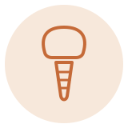
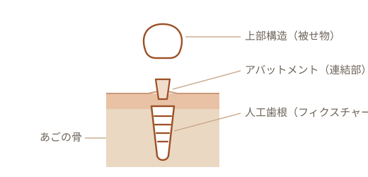

当院では、インプラント治療への対応を進めています。担当の体制や詳しいご案内は準備を進めているところです。まずは、ほかの治療法もふくめてお気軽にご相談ください。（仮）

失った歯を、もう一度。
インプラントは、歯を失ったところのあごの骨に人工の歯根（チタン製）を入れ、その上に歯を作る治療です。入れ歯のように取り外す必要がなく、自分の歯のようにしっかり噛めることを目指します。手術をともなう自費診療です。利点だけでなく、リスクや向き不向きもふくめて、ご相談のうえで進めます。
こんな方にご相談いただいています（仮）
- 歯を失ったまま、そのままにしている
- ブリッジや入れ歯が合わない・気になる
- 両隣の健康な歯を、できれば削りたくない
- しっかり噛めるようにしたい
インプラントとは
インプラントは、3つの部品でできています。あごの骨に結びつく人工歯根が、土台になります。

チタンは、骨と結びつきやすい性質をもつ金属です。あごの骨に入れた人工歯根が骨としっかり結びつくことで、噛む力をささえる土台になります。その上に連結部と被せ物を取りつけて、歯の形を作ります。
治療の流れ
-
STEP 1
検査・診断・ご説明
レントゲンなどでお口とあごの骨の状態を確認し、インプラントが向いているか、ほかの治療法も含めてご説明します。（仮）
-
STEP 2
人工歯根を入れる手術
麻酔をして、あごの骨に人工歯根を入れます。骨が足りない場合は、骨を補う処置が必要になることがあります。（仮）
-
STEP 3
骨と結びつくのを待つ
人工歯根が骨としっかり結びつくまで、数か月ほど待ちます（部位や状態によって異なります）。（仮）
-
STEP 4
歯を取りつける・メンテナンス
連結部と被せ物を取りつけて、噛み合わせを調整します。長くお使いいただくため、その後の定期的なメンテナンスが欠かせません。（仮）
入れ歯・ブリッジとのちがい
歯を失ったところを補う方法は、インプラントだけではありません。それぞれに長所と短所があります。どれが向いているかは、お口の状態やご希望によって変わります。
リスク・注意していただきたいこと
インプラントは手術をともなう治療です。安全に進めるために、次の点をあらかじめご理解ください。
よくあるご質問
- 誰でも受けられますか？
- 全身の状態や、あごの骨の状態によっては、難しいことや、できないことがあります。まず検査を行い、向いているかどうかをご説明します。（仮）
- 手術は痛いですか？
- 手術は麻酔をして行います。術後の痛みや腫れには個人差があり、痛み止めなどで対応します。心配なことは事前にご相談ください。（仮）
- 入れたら、ずっともちますか？
- 毎日のケアと定期的なメンテナンスが、長くお使いいただくためのカギです。お手入れを怠ると、インプラント周囲炎で失うこともあります。（仮）
出典: 日本口腔インプラント学会／日本歯科医師会（テーマパーク8020）ほか。本ページの記述は一般的な情報であり、治療の可否・内容・費用・リスクは診察のうえ個別にご説明します。